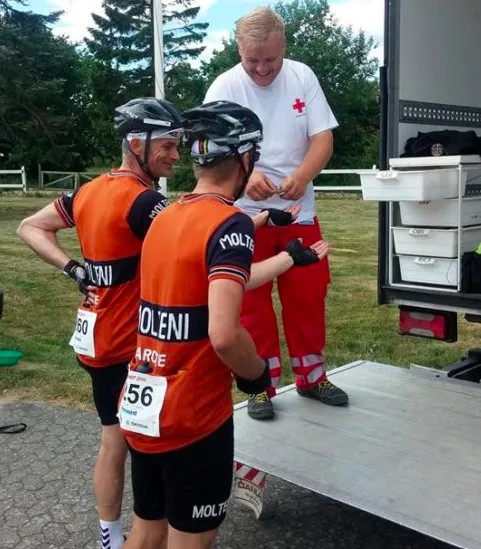
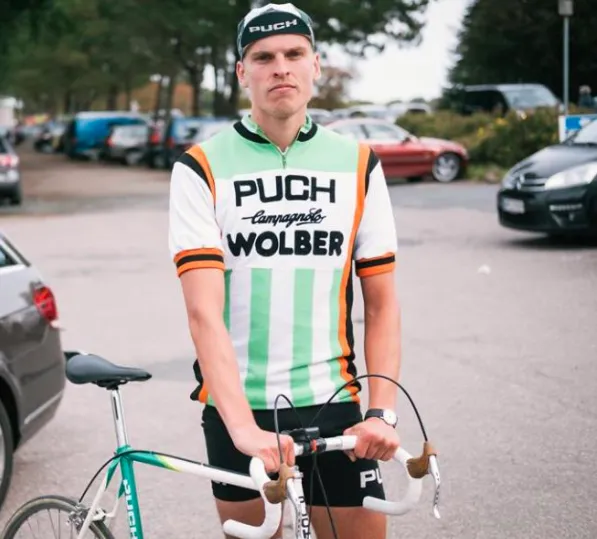

Skader og brostens-legionær

Som et halvsløvt morgenudbrud nærmer tiden sig, hvor Squadra Molteni rejser til de nordfranske slagmarker, for at kæmpe gennem brosten, kolort og støv eller mudder i L’Enfer du Nord. Men holdet er ramt af skadesmeldinger fra Eigil Leegaard og Grane Maaløe – og har måtte indkalde en legionær.
Grane Maaløe, der var tiltænkt en vigtig slider-opgave, har desværre måttet melde fra til Paris-Roubaix med en alvorlig skade. Skaden er med stor sandsynlighed opstået hen over vinteren, hvor Grane i flere hundrede timer har håndslebet Squadra Moltenis nye teambus; en Citroën HY fra 1971. Slibearbejdet har sat sig som en voldsom betændelse i den ene albue.
– Holdlæge Finn Birk har proppet mig med kortison de sidste 14 dage, men Finn har nu vurderet, at albuens betændelse ikke kan tåle 57 km brostenskørsel. Desuden er Finn løbet tør for sløringsstof for kortison, så jeg ville være helt selvlysende i en eventuel dopingkontrol, fortæller Grane.


Eigil Leegaard har desværre også måtte melde afbud til slaget om Helvede i Nord. Eigil er stadig ved at komme sig efter en operation i den ene skulder.
– Jeg har i mange år gået med en granatsplint i min højre skulder, som jeg pådrog mig under en mission i Helmand Provinsen i 2008. Kort efter nytår fik jeg opereret granatsplinten ud, og gik dermed adskillige gram ned i vægt , fortæller Eigil
Både Eigil og skulder har det godt efter operationen, men han forventer først at være løbsklar i slutningen af april.
Squadra Molteni HQ har de sidste par uger været på overarbejde, for at finde et par legionærer, som kunne udfylde Granes og Eigils roller.
– Det har ikke været en let opgave. Det er jo to af holdets top-ryttere, som der skulle findes erstatninger for, fortæller Kaptajn Niels Bjørnsteen.
Men efter længere forhandlinger med forskellige hold, er det nu lykkedes Squadra Molteni at skrive en legionær-kontrakt med en af danmarks bedste retroryttere: Jeppe Thiemer fra det tyske Team Puch – Wolber – Campagnolo.


– Jeppe Thiemer er en bomstærk slider, der ikke er bange for at ligge ude i vinden i timevis. Vi har fra vores gode ven Pastor Mogensen i Malaga hørt om Jeppes præstationer i forbindelse med den højdetræning han var på i efteråret i pastorens baghave. Det er enestående præstationer Jeppe leverede, og vi er utrolig glade for, at have ham med på holdet, fortæller Løjtnant Kasper Sørensen.
– Vores chefmekaniker er begyndt at samle en orange Eddy Merckx Molteni cykel, og vi har sendt en hasteordre afsted til vores italienske systue – så Jeppe både kan ser godt ud og køre optimalt i det Orange Eksprestog, fortsætter Kaptajn Bjørnsteen
Hvor meget det har kostet at hyre legionæren er hemmeligt, men der er efter sigende indkøb adskillige flasker tysk hvedeøl og et par meter currywurst.